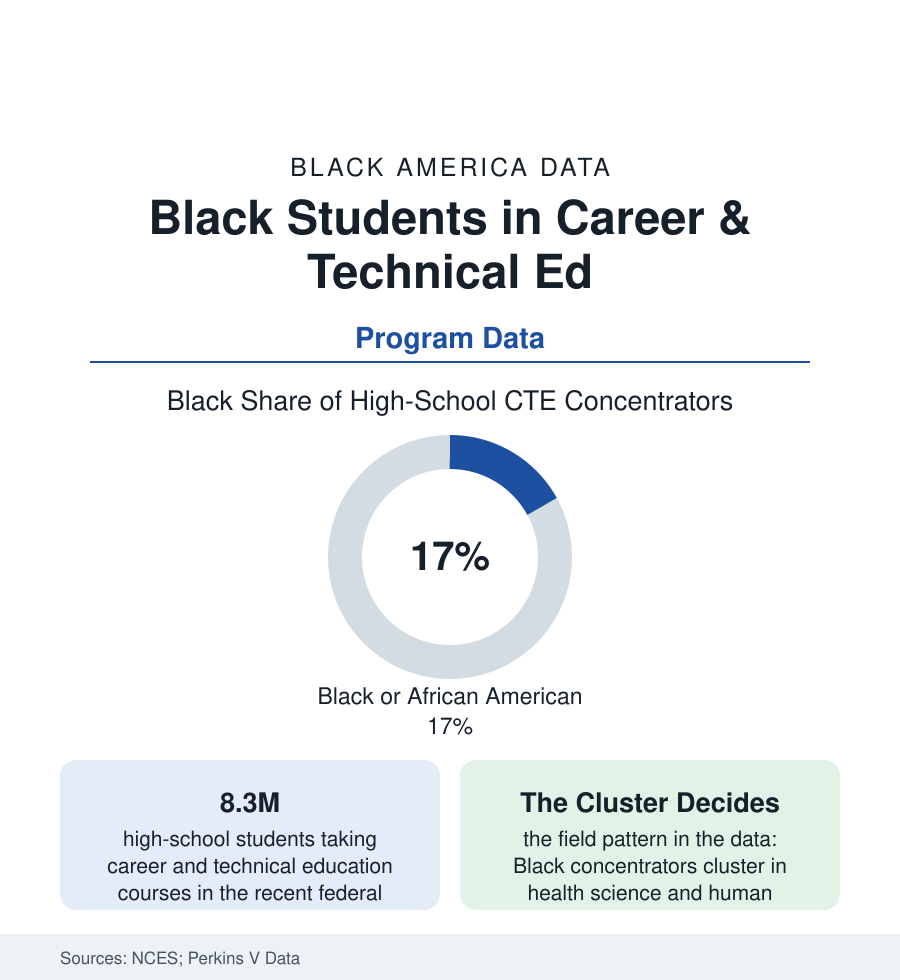

Black Education
Black Students in Career and Technical Education: The Other Graduation Track
About 1 in 4 high-school career-tech concentrators is Black, clustered by field in patterns that decide paychecks a decade later. The Perkins and NCES data.

Nearly every American high-school student takes a career and technical education course; the students who concentrate in CTE — building a sequence toward a credential and a first career — number in the millions, and Black students make up roughly one in six of them in the federal counts, a share close to their enrollment share. The equity question in CTE is not the door; it is the hallway. Sixteen federally tracked career clusters lead to occupations whose median wages differ by tens of thousands of dollars, and the clusters Black concentrators choose — and are counseled into — are not the clusters at the top of the wage table. This article reads the Perkins data.
The Cluster Map: Where Black Concentrators Land
The state-reported Perkins data draw the pattern cluster by cluster: Black concentrators are most heavily represented in health science (the largest single cluster — the pipeline toward the nursing-assistant, phlebotomy, and allied-health credentials of the healthcare-workforce file), human services (cosmetology and early-childhood tracks prominent — the cosmetology license economy of the beauty-industry article), hospitality and culinary, and law and public safety (the corrections-and-security pipeline whose destination the employment section prices coolly). The thinnest representation sits in the clusters with the highest occupational medians: engineering and technology, information technology, and the construction and manufacturing trades' school-side sequences — despite those trades' strong non-college wages and the apprenticeship file's demonstrated earnings. The gender overlay doubles the sorting: Black girls concentrate in health and human services at higher rates than any other group in the cross-tabs; Black boys in transportation, automotive, and public safety — the two maps together tracing the adult workforce's composition a stage early, the CTE data functioning as the labor market's rough draft.
Outcomes: Credentials, Wages, and the Two Doors
The outcome literature gives CTE a measured defense: concentrators graduate at higher rates than the overall student body in the federal data (the engagement effect), earn industry credentials at scale (the state credential counts — with the value variance the researchers flag: a CNA and a welding certification are both 'credentials' in the count and different instruments in the market), and enter employment or postsecondary at high combined rates. The fork in the file is the destination split: CTE's strongest wage evidence runs through the postsecondary continuation — the concentrator who stacks the high-school sequence into the community-college certificate or the registered apprenticeship — while the direct-to-work path lands at the entry-wage tier of the cluster chosen. The racial layer of the outcome data is thinner than the participation layer (the states' Perkins V equity reporting is young), but the wage-by-cluster mathematics needs no racial table to bite: a sorting pattern that steers Black concentrators toward the lower-wage clusters reproduces the earnings file inside the population of students who did everything CTE asked. The counseling and access data (which students get the engineering sequence's prerequisite math on schedule; which schools field which clusters — the well-equipped suburban technical centers versus the in-house programs of the underfunded file) supply the mechanism studies.
The Modern CTE Build-Out
The sector's current construction is substantial: the career-academy and wall-to-wall-choice models in the big districts (whose Black students form their largest populations), the industry-partnership academies (health systems, manufacturers, and logistics firms co-building the labs the budgets cannot), the dual-enrollment stacks (high-school concentrators graduating with the community-college certificate in hand — the strongest-value design in the evaluations), and the pre-apprenticeship bridges into the registered system (the trades' own diversity pipelines, whose completion data the apprenticeship literature follows). The policy ledger runs through Perkins V's equity requirements (the special-populations reporting that now names the cluster gaps in each state's own data) and the employers' skills-gap testimony that keeps the appropriations bipartisan in the ordinary legislative record. The design question the data pose to every district building a new center is the hallway question in architectural form: which clusters get the new building, and whose children are counseled down which corridor.
Reading the CTE Data
Participation near parity, destinations sorted by wage: CTE is where the opportunity structure stops being abstract for a sixteen-year-old — a cluster choice at fifteen prices itself at thirty-five. The data this article keeps returning to are the corridor counts: not whether Black students are in the building (they are), but which rooms the building's advising sends them to, and what the rooms pay. The hallway is the policy.
More in Black Education
Black Educational Attainment: High School Parity, the College Gap
About 89 percent of Black adults hold a high school diploma and one in four holds a bachelor's degree or higher — the attainment ladder, the college completion gap, and the generational trend.
Historically Black Colleges and Universities: Enrollment and Degrees
More than 100 HBCUs enroll roughly 290,000 students and award about one in six Black bachelor's degrees — an outsized share from a small sector. The federal education data.
Black College Enrollment: 2.4 Million Students
About 2.4 million Black students are enrolled in American colleges — nearly two-thirds of them women. The NCES enrollment data by sector, level, and trend.
Source: National Center for Education Statistics; U.S. Department of Education Perkins V state data; Association for Career and Technical Education; Bureau of Labor Statistics occupational data.